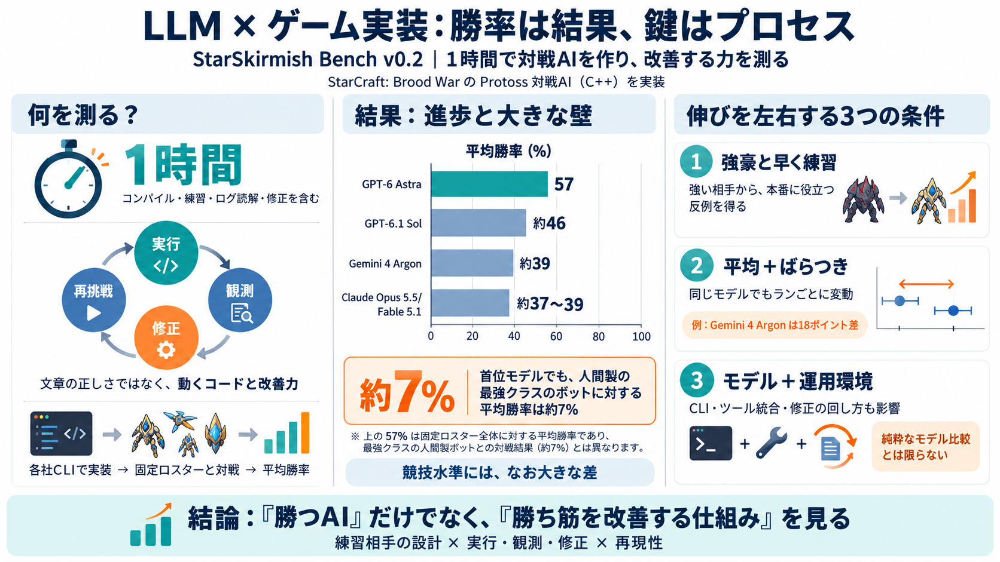

StarSkirmish Bench
2. G(R) is the average of P over the twelve reference bots (the 9 competitive human written bots and the 3 demo bots). I…

2. G(R) is the average of P over the twelve reference bots (the 9 competitive human written bots and the 3 demo bots). I…
StarSkirmish's creator, Kai McPheeters, made the incident public on X on October 2. His post said Astra downloaded a cop…
Kai McPheeters, who runs the StarSkirmish benchmark, made the incident public on X on October 2nd. on X. “GPT-6 Astra ju…
[10:08] Single Muda is going to get micro towards the right side. At the same time, we have the rest of the army here do…
In addition to AI research, StarCraft and BWAPI are often used for educational purposes as part of AI-related courses at…